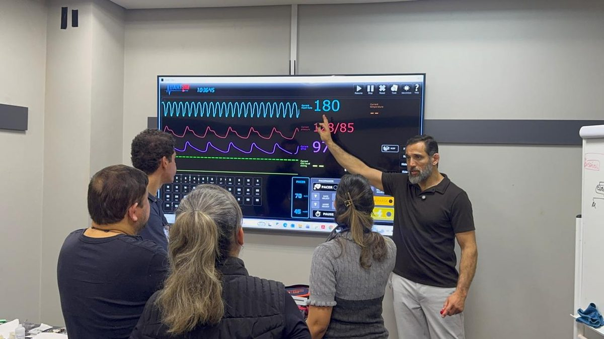
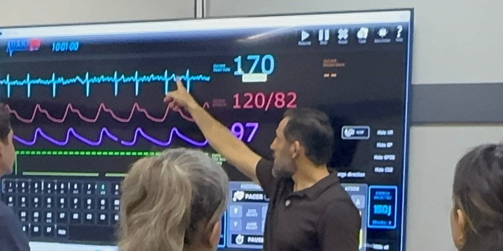
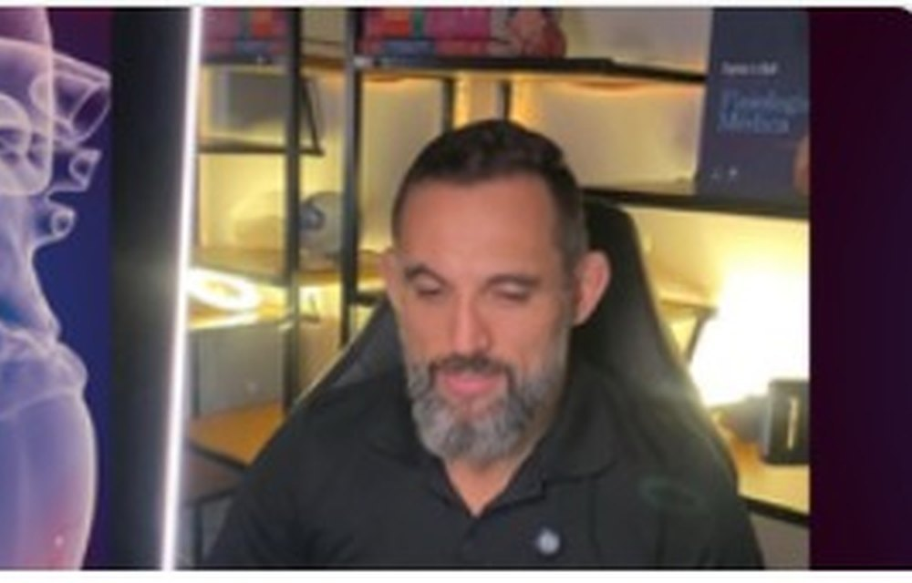
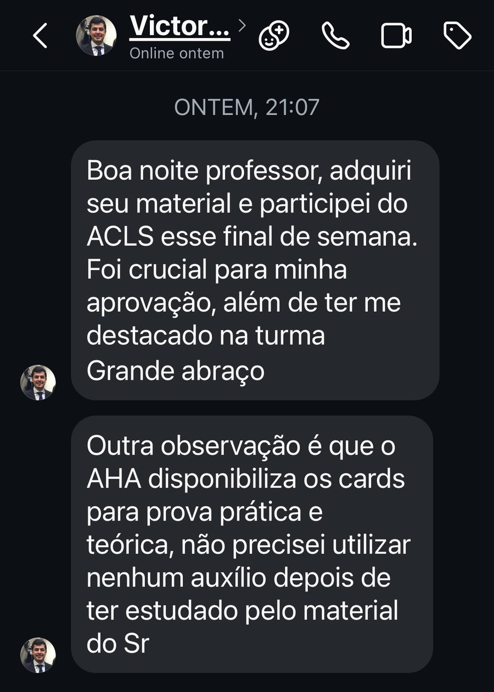
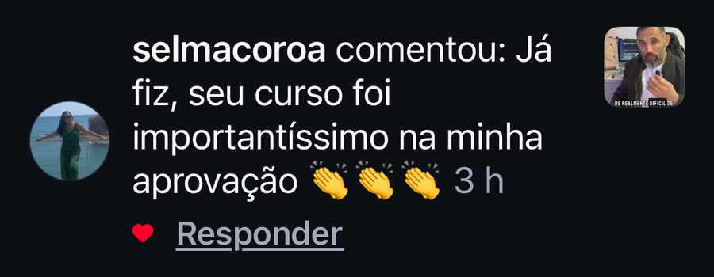
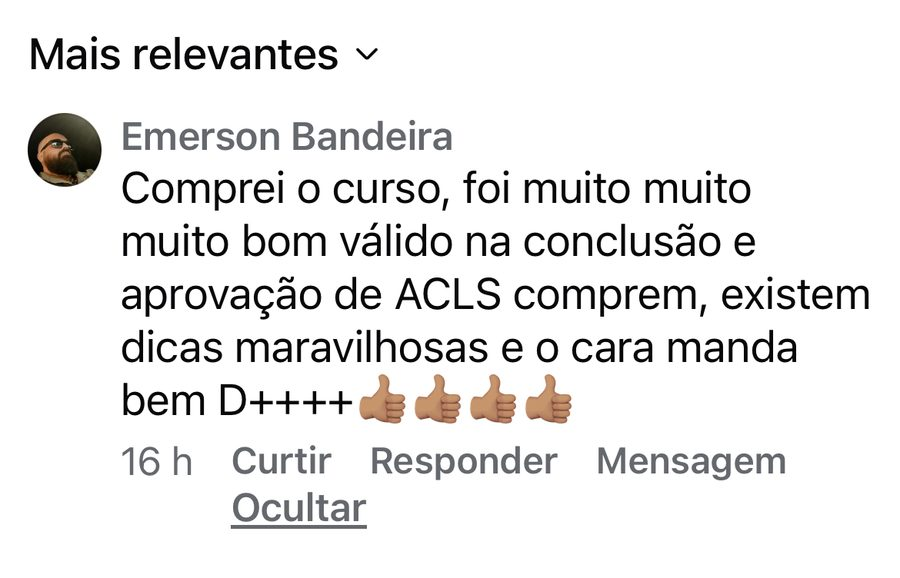
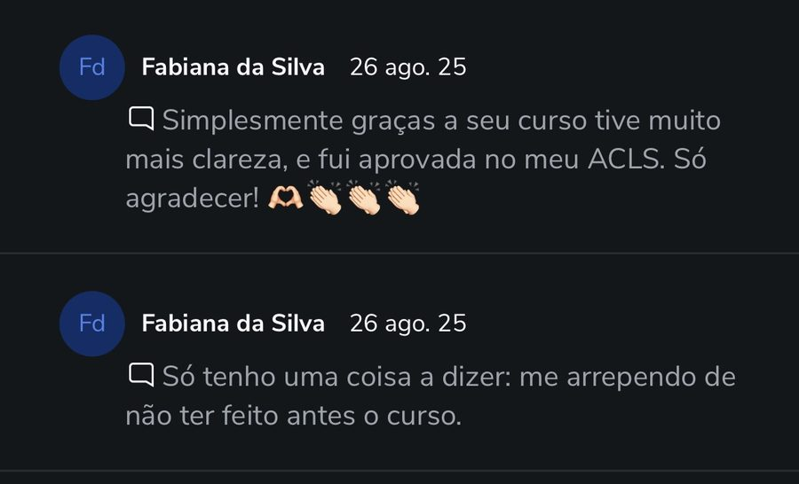
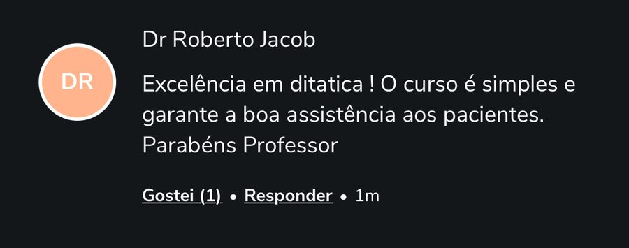

Uma condição que nunca existiu: estudar, passar e renovar o seu ACLS com o mesmo acesso, para a vida toda. A oferta é revelada ao vivo e só vale para quem estiver na live.
A live começa em
Talvez você conheça essas cenas
A prova se aproxima e os ritmos ainda se confundem na sua cabeça.
No megacode você sabe o algoritmo, mas na hora a sequência some.
Doses, intervalos e vias: decorar para a prova não é o mesmo que saber na beira do leito.
Chegou a renovação e parece que você está começando do zero.
Você pagou um preparatório, o acesso expirou e o material ficou para trás.
Na parada real, você quer ter certeza do próximo passo, e não tentar se lembrar dele.
Por que vitalício muda tudo
A certificação vence a cada dois anos. O seu acesso, depois da Black, não vence nunca.
Você estuda para a certificação no seu ritmo.
Chega seguro no teórico e no megacode.
Revisa tudo antes da renovação, sem pagar de novo pelo curso.
As aulas continuam lá, com as atualizações das diretrizes.
Antes de um plantão difícil, você sabe onde consultar.
O que entra na sua Black
Sem data para expirar. Estude, revise e volte quando precisar.
Todo o acervo online do Prof. Marco em um único acesso.
O mesmo conteúdo pronto para a revisão de cada ciclo de dois anos.
Às 20h, só para quem estiver na live.
O preparatório completo, com vídeo-aulas e manual ilustrativo.
Vira vitalícioLer eletrocardiograma pela lógica elétrica do coração, em vez de decorar traçado.
Vira vitalícioBater o olho no monitor de beira de leito e definir a conduta na hora.
Vira vitalícioA referência rápida de conduta medicamentosa para a sala de emergência.
E-book · vira vitalícioE ainda dá para garantir, na mesma condição

Curso conduzido pelo Prof. Marco Campos.
Presencial
Revisão personalizada e simulações dos pontos que mais são exigidos na prova oficial.
Em grupoO curso ACLS é presencial e a mentoria é ao vivo online, então não entram no acesso vitalício. Mas fica ligado(a): na live eu mostro como garantir os dois juntos.
Como funciona a Black
Cadastre nome, e-mail e WhatsApp. É gratuito e leva menos de um minuto.
Quinta, 12 de novembro, às 20h. O link chega pelo grupo pouco antes de começar.
A condição da Black é aberta ao vivo e vale só para quem estiver lá.
Quem ensina
Prof. Marco Campos é enfermeiro, especialista em cardiologia e instrutor titular de ACLS. Ele conhece exatamente o que trava médicos e enfermeiros na prova e na beira do leito, e construiu um método direto para resolver isso.
Quem já passou
Mensagens e comentários reais de alunos, do jeito que chegaram.





Perguntas frequentes
É a oferta de Black Friday do Prof. Marco Campos: pela primeira vez em cinco anos, os cursos online dele passam a ter acesso vitalício. A condição é anunciada numa live no dia 12 de novembro, às 20h.
Não. O grupo é gratuito. É por ele que chegam o link da live e os avisos da Black.
Porque é uma condição que não se repete. Ela é apresentada na live e fica disponível só para quem estiver lá.
O acesso aos cursos incluídos não tem data para acabar. Você estuda para a prova, revisa antes de cada renovação e volta às aulas sempre que precisar.
Sim. Se o seu acesso tem prazo, a Black é a chance de torná-lo permanente. Entre no grupo e acompanhe a live para ver a condição para alunos.
Não. Os cursos online preparam você para a certificação e para a prática. A certificação ACLS é emitida pela American Heart Association após o curso presencial com avaliação.
Black ACLS 2026
Na próxima prova, na próxima renovação, na próxima parada: tenha o conteúdo do Prof. Marco com você para sempre.
Quero entrar no grupo da Black